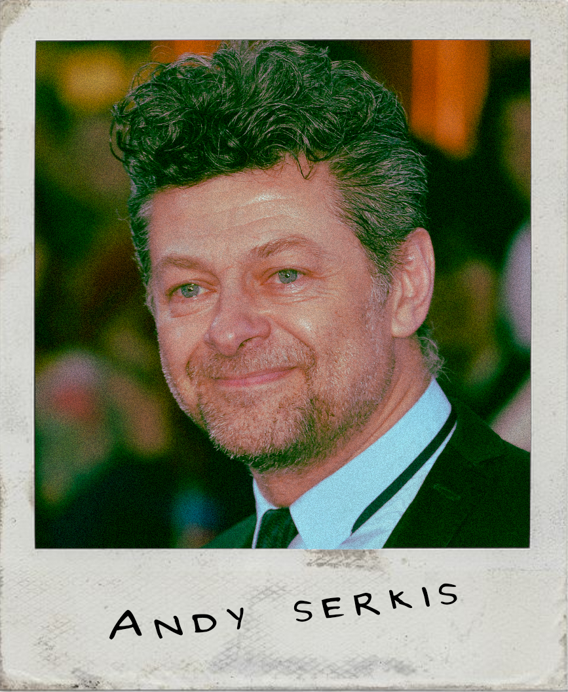

Robert Douglas Thomas Pattinson (born 13 May 1986) is an English actor. After starting to act in a London theatre club at the age of 15, he began his film career by playing Cedric Diggory in the fantasy film Harry Potter and the Goblet of Fire (2005). He went on to star as Edward Cullen in the film adaptations of the Twilight novels, consisting of five films between 2008 and 2012, which earned a combined total of over $3.3 billion worldwide. It brought Pattinson worldwide fame and established him among the world's highest-paid actors.
After starring in the romantic dramas Remember Me (2010) and Water for Elephants (2011), Pattinson eschewed roles in big-budget films in favour of independent productions helmed by auteurs. He played a manipulative billionaire in David Cronenberg's thriller Cosmopolis (2012), an aspiring actor in Cronenberg's satire Maps to the Stars (2014), an explorer in James Gray's adventure drama The Lost City of Z (2016), a bank robber in the Safdie Brothers' crime drama Good Time (2017), a criminal in a spaceship in Claire Denis' science-fiction drama High Life (2018), and a troubled lighthouse keeper in Robert Eggers' horror film The Lighthouse (2019). He returned to mainstream films with a leading role in Christopher Nolan's spy film Tenet (2020).Pattinson has sung songs for the Twilight soundtrack and the film How to Be (both 2008). He supports several charities, including the GO Campaign. In 2010, Time magazine named him one of the 100 most influential people in the world, and he was featured in the Forbes Celebrity 100 list.
In THE BATMAN, Pattinson will play a young Bruce Wayne, still in the infancy stage of being Batman. With tensions rising high and a murderer on the loose, he must rise up to the challenge and take the murderer down.
Audio has been taken from his interview with Variety TM
Biography is from WIKIPEDIA TM

Zoë Isabella Kravitz (born December 1, 1988) is an American actress, singer and model. The daughter of actor-musician Lenny Kravitz and actress Lisa Bonet, Kravitz achieved recognition for her portrayal of Angel Salvadore in the 2011 superhero film X-Men: First Class, which was followed by supporting roles in The Divergent Series (2014–2016) and Mad Max: Fury Road (2015). Kravitz made her acting debut in the 2007 romantic comedy film No Reservations. Since then, she has starred as Leta Lestrange in the Harry Potter spin-off, the Fantastic Beasts film series, and voiced Mary Jane Watson in Spider-Man: Into the Spider-Verse (2018). She has had starring roles in numerous independent films, including Dope (2015), Adam Green's Aladdin (2016), and Gemini (2017). In addition, Kravitz portrayed lead roles in the HBO drama series Big Little Lies (2017–2019) and the Hulu romantic comedy series High Fidelity (2020). After voicing Catwoman in The Lego Batman Movie (2017), she is now set to play her in live action for The Batman (2022).
In THE BATMAN, Kravitz stars as the feline thief Catwoman.
Audio has been taken from her interview with Ellen DeGenres
Biography is from WIKIPEDIA TM

Jeffrey Wright (born December 7, 1965) is an American actor. He is best known for his Tony, Golden Globe, and Emmy winning role as Belize in the Broadway production Angels in America and its acclaimed HBO miniseries adaptation. He also starred as Jean-Michel Basquiat in Basquiat, Felix Leiter in the James Bond films Casino Royale, Quantum of Solace and No Time to Die, Valentin Narcisse in the HBO series Boardwalk Empire, and Beetee in The Hunger Games films. Since 2016, Wright has starred as Bernard Lowe and Arnold Weber in the HBO series Westworld. Wright will portray Commissioner James "Jim" Gordon in the superhero film The Batman (2022) by Matt Reeves.
In THE BATMAN, Wright plays Jim Gordon. During his time with the GCPD, Jim has had stressful cases and tough decisions, however with Gotham's resident killer on the loose, he has to call for help from the mysterious detective Batman.
Audio has been taken from his interview with SiriusXM
Biography is from WIKIPEDIA TM

Paul Franklin Dano is an American actor, director, screenwriter, producer, and musician.Dano started his career on Broadway before making his film debut in The Newcomers (2000). He won the Independent Spirit Award for Best Debut Performance for his role in L.I.E. (2002) and received accolades for his role as Dwayne Hoover in Little Miss Sunshine (2006). For his dual roles as Paul and Eli Sunday in Paul Thomas Anderson's There Will Be Blood (2007), he was nominated for the BAFTA Award for Best Supporting Actor. Dano has also received accolades for roles such as John Tibeats in Steve McQueen's 12 Years a Slave (2013) and Alex Jones in Dennis Villeneuve's Prisoners (2013). His acting portrayal of musician Brian Wilson in Love & Mercy (2014) earned him a Golden Globe nomination in the category of Best Supporting Actor. He has been cast as Edward Nashton / The Riddler in The Batman (2022).Dano made his directorial debut with the 2018 drama film Wildlife, based on the novel by Richard Ford and starring Carey Mulligan and Jake Gyllenhaal. He co-wrote the screenplay with his partner Zoe Kazan. In 2018, he starred in the Showtime miniseries Escape at Dannemora, for which he received a Primetime Emmy Award nomination for Outstanding Supporting Actor in a Limited Series or Movie.
In THE BATMAN, Dano is Edward Nigma. Driven to expose Gotham's corruption, Nigma is doing more than just making petitions to bring the injustice to light. He is out for blood...
Quote has been taken from his interview with ThePlaylistTM
Biography is from WIKIPEDIA TM

|  |
|---|
| Andy Serkis is Alfred Pennyworth |